gf_point(EnjoymentPiggy ~ FearPiggy, data = feardata) +
geom_smooth(method = "lm")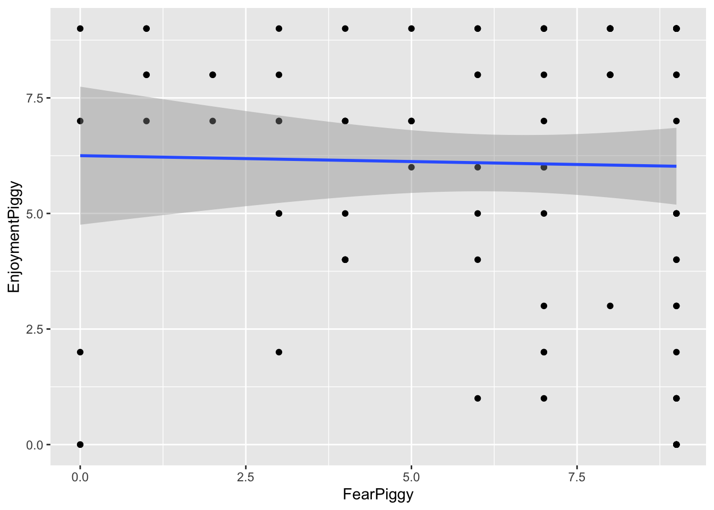
Michael Woller
Though it might seem like an oxymoron, linear regression can be used to model nonlinear relationships. The “linear” in linear regression actually refers to the fact that the model is linear in its coefficients (the betas), not that the relationship between the predictors and the outcome must be a straight line. This means we can include transformed predictors - such as squared terms, cubic terms, or other functions of variables - to capture curved relationships, while still estimating the model using linear regression techniques.
For example, including a term like \(X^2\) allows the model to fit a curve rather than a straight line. As long as the model remains linear in the coefficients (e.g., \(\beta_1 X + \beta_2 X^2\)), it is still considered a linear model, even though the relationship between X and the outcome is nonlinear.
There are multiple types of nonlinear models you can run depending on what type of nonlinearity is present in the data.
For this lesson we will use a haunted house dataset that was collected after individuals walked through a haunted house that some psychologists cooked up. Specifically, for this lesson, of interest was a “piggy” jump scare, in which someone in a pig mask jumps out with a chainsaw. The data we will look at is:
FearPiggy — how much you were afraid of the piggy jump scare (1–10 scale)EnjoyPiggy — how much you enjoyed the piggy jump scare (1–10 scale)We are exploring the nonlinearity of how much an individual was afraid of a “piggy jump scare” at the haunted house (FearPiggy) in predicting how much they enjoyed the piggy jump scare (EnjoymentPiggy).
It is possible that individuals only enjoyed the piggy when it was not scary or was very scary, but did not care for it when it was moderately scary. This would be a nonlinear relationship.
Note, the dataset that was given to develop the lab lesson proved to not really have any nonlinearities (spoiler), so this isn’t the best example to teach with. If I ever get a hold on nonlinear data and can be bothered to come back and change some of these, I might in the future.
Typically it is important to visualize your data before finalizing your model, but this is especially the case when your model might be nonlinear. We need to see the type of nonlinearity present to determine what kind of nonlinear model to fit. If the relationship is a U shape, we might want a quadratic model. If it is more like a W, maybe a quartic model would be better.
We will be plotting using the ggformula package. Also make sure you have the dplyr package loaded in order to use the %>% piping operator later on.
The scatterplot does not seem super nonlinear, but you can see how the clustering of points starts to become lower on the ends of the plot. This might be due to some trace amount of nonlinearity in a \(\cap\) shape. The fitted linear line is very flat, which suggests there may not be much of a linear relationship. However, keep in mind that a flat linear line can still manifest as a curved polynomial line (think how the average of a U shape would still amount to a flat line).
To further investigate, we can plot the residuals against FearPiggy:
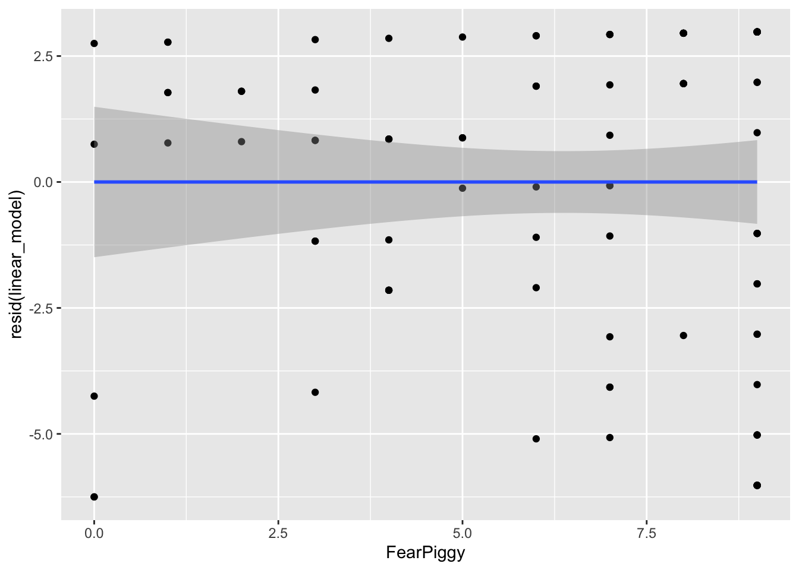
By looking at the left and right ends of the plot, we can see the largest deviations from the predicted line. Our straight line fits the worst at the ends, which is roughly what we took away from the previous plot. These residual plots are helpful at diagnosing at what points in the predictor range the linear line fits the worst.
Note: the nonlinear models also do not fit very well in this dataset - it was not originally designed with a strong nonlinear relationship. The goal here is to learn the methods, not to find significant effects.
A polynomial line is a line that has one or more inflection points (a local minimum or maximum). Polynomial lines are determined by an exponential:
Typically a cubic line is the highest you will go, as models with higher exponents are very rare, and you want to avoid overfitting. This would be building a model that fits the current dataset so closely (including random noise) that it does not generalize well to the population.
Whenever you make a polynomial line, you must include all lower-degree terms. For a quadratic model: \[Y = b_0 + b_1 X + b_2 X^2\]
For a cubic model: \[Y = b_0 + b_1 X + b_2 X^2 + b_3 X^3\]
You have two options. Option 1 is to create a new squared variable:
Call:
lm(formula = EnjoymentPiggy ~ FearPiggy + FearPiggy2, data = feardata)
Residuals:
Min 1Q Median 3Q Max
-5.770 -2.573 1.009 2.797 3.648
Coefficients:
Estimate Std. Error t value Pr(>|t|)
(Intercept) 5.35235 1.07042 5.000 2.48e-06 ***
FearPiggy 0.51208 0.46905 1.092 0.278
FearPiggy2 -0.05175 0.04395 -1.177 0.242
---
Signif. codes: 0 '***' 0.001 '**' 0.01 '*' 0.05 '.' 0.1 ' ' 1
Residual standard error: 3.114 on 99 degrees of freedom
Multiple R-squared: 0.01436, Adjusted R-squared: -0.005556
F-statistic: 0.721 on 2 and 99 DF, p-value: 0.4888Option 2 is to use the I() function inside lm(), which allows you to transform a variable mid-formula:
Call:
lm(formula = EnjoymentPiggy ~ FearPiggy + I(FearPiggy^2), data = feardata)
Residuals:
Min 1Q Median 3Q Max
-5.770 -2.573 1.009 2.797 3.648
Coefficients:
Estimate Std. Error t value Pr(>|t|)
(Intercept) 5.35235 1.07042 5.000 2.48e-06 ***
FearPiggy 0.51208 0.46905 1.092 0.278
I(FearPiggy^2) -0.05175 0.04395 -1.177 0.242
---
Signif. codes: 0 '***' 0.001 '**' 0.01 '*' 0.05 '.' 0.1 ' ' 1
Residual standard error: 3.114 on 99 degrees of freedom
Multiple R-squared: 0.01436, Adjusted R-squared: -0.005556
F-statistic: 0.721 on 2 and 99 DF, p-value: 0.4888As we can see from these outputs, the quadratic line is not a good fit. The quadratic term is not significant (\(t(99) = -1.77\), \(p = .242\)), so we fail to reject that there is a quadratic relationship. You can also do a \(\Delta R^2\) test with and without the nonlinear term to test this more formally.
Generally, you do not interpret the polynomial term because its interpretation does not make intuitive sense. You can interpret the linear FearPiggy as the linear relationship (similar to what is done normally).
If you want to understand the coefficient intuitively, you can think of the \(X^2\) term as an interaction, where the effect of FearPiggy depends on the level of FearPiggy itself. Knowing the polynomial coefficient is about -.05, as FearPiggy increases, the effect of FearPiggy on EnjoymentPiggy decreases.
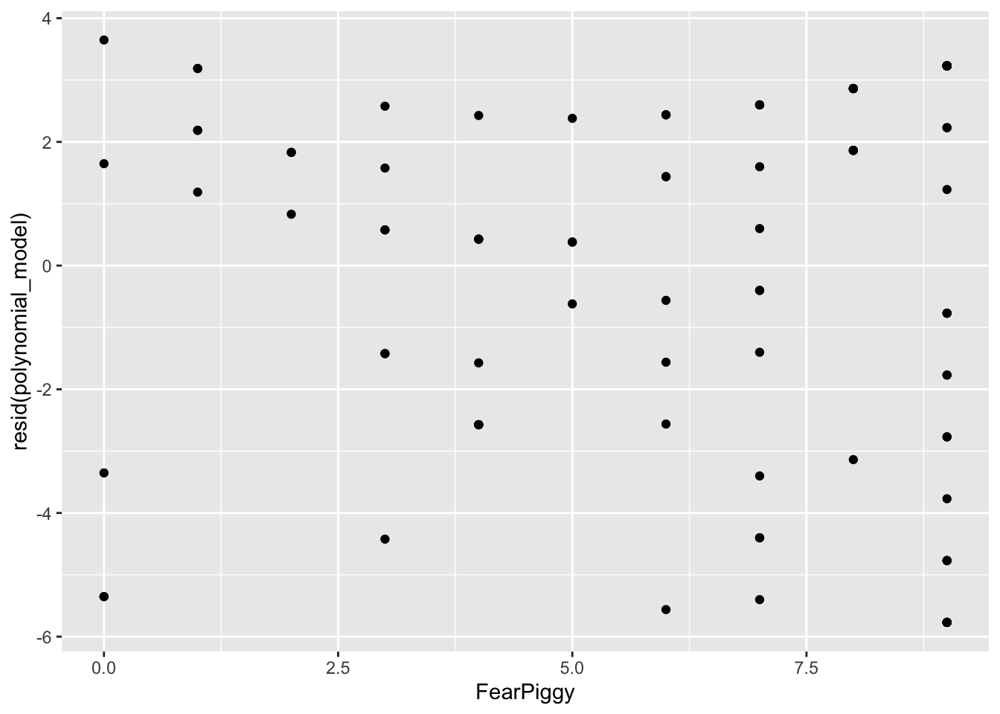
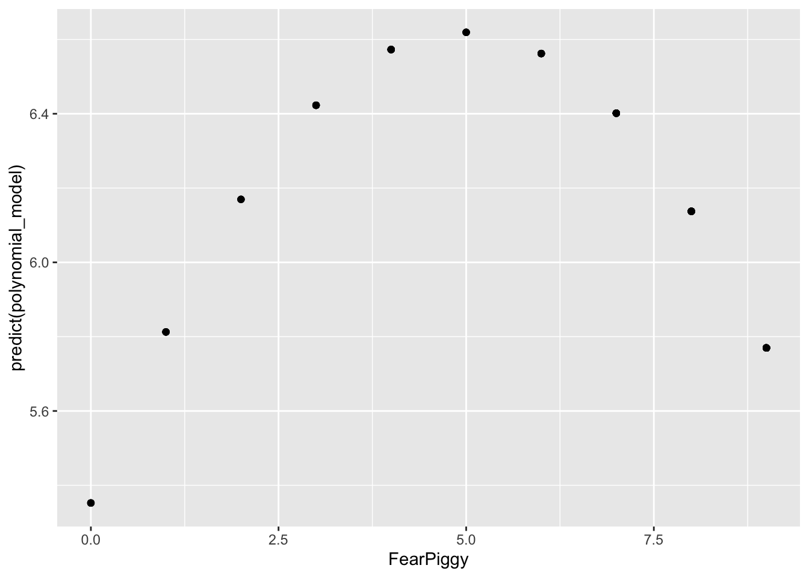
NOTE: Do not be fooled by the shape here. Note the range of the Y-axis. It is very small, meaning the quadratic line is actually very flat, which is why it is non-significant.
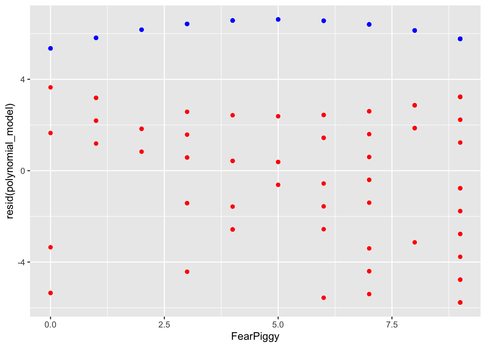
The residuals are generally much lower than the quadratic line predicted. As I said, you can see how the quadratic line is much flatter than the unadjusted plot shows. In conclusion, a polynomial nonlinear model was a poor fit for our data.
Piecewise regression fits separate linear relationships across different ranges of a predictor variable by introducing one or more breakpoints (also called knots). Instead of assuming a single straight line describes the entire relationship, piecewise regression allows the slope to change at specified values of the predictor. This results in multiple line segments joined together at the breakpoints.
This is especially useful when the effect of a variable is not constant - for example, when a predictor has little effect up to a certain point and then becomes stronger, weaker, or changes direction. A common example is A/B clinical designs.
As a side note, piecewise regression is a type of “spline” regression. It is also related to moderation in both its interpretation and its function - the piecewise line is basically an interaction term! If you have not yet done the Moderation lesson, come back to this after.
A segmented piecewise model fits two disconnected line segments with different slopes and intercepts.
First, create a breakpoint indicator variable (0 for values below the breakpoint, 1 for values at or above it). We will use FearPiggy = 5 as the breakpoint. Always include the breakpoint in the second line segment.
Then fit a model with the original predictor, the breakpoint indicator, and the interaction:
Call:
lm(formula = EnjoymentPiggy ~ FearPiggy + XJ + FearPiggyXJ, data = feardata)
Residuals:
Min 1Q Median 3Q Max
-5.819 -2.256 1.027 2.898 3.197
Coefficients:
Estimate Std. Error t value Pr(>|t|)
(Intercept) 5.8034 1.0854 5.347 5.85e-07 ***
FearPiggy 0.1132 0.3905 0.290 0.772
XJTRUE 2.4426 2.5726 0.949 0.345
FearPiggyXJ -0.3829 0.4858 -0.788 0.432
---
Signif. codes: 0 '***' 0.001 '**' 0.01 '*' 0.05 '.' 0.1 ' ' 1
Residual standard error: 3.138 on 98 degrees of freedom
Multiple R-squared: 0.009671, Adjusted R-squared: -0.02065
F-statistic: 0.319 on 3 and 98 DF, p-value: 0.8116Looking at the output:
FearPiggy = .20) is not significant.FearPiggyXJ (-.42) is the difference between the slope of the first and second line segments. Since this is also not significant, there is no significant difference between the two slopes.To get the slope of the second line segment, add the two slopes together:
To get the significance of the second line segment slope, switch the indicator coding and rerun:
Call:
lm(formula = EnjoymentPiggy ~ FearPiggy + XJ2 + FearPiggyXJ2,
data = feardata)
Residuals:
Min 1Q Median 3Q Max
-5.819 -2.256 1.027 2.898 3.197
Coefficients:
Estimate Std. Error t value Pr(>|t|)
(Intercept) 8.2460 2.3325 3.535 0.000624 ***
FearPiggy -0.2697 0.2889 -0.933 0.352875
XJ2TRUE -2.4426 2.5726 -0.949 0.344726
FearPiggyXJ2 0.3829 0.4858 0.788 0.432427
---
Signif. codes: 0 '***' 0.001 '**' 0.01 '*' 0.05 '.' 0.1 ' ' 1
Residual standard error: 3.138 on 98 degrees of freedom
Multiple R-squared: 0.009671, Adjusted R-squared: -0.02065
F-statistic: 0.319 on 3 and 98 DF, p-value: 0.8116The slope of the second line segment is not significant. Note that the magnitude of the interaction is the same (.38) but the sign changes to keep the arithmetic consistent.
Interpretation example (first segment slope):
For two individuals who are below a score of 5 in their fear of the piggy jump scare and differ in one unit of fear, the individual who was more afraid is expected to be about .11 point higher in their enjoyment of the piggy jump scare.
Interpretation example (interaction):
The difference in slopes for individuals who have a fear piggy score of less than 5 and those who have a score of 5 or greater is about .38.
You can see the two different line segments with different projections. Don’t be confused by the scale of the Y-axis. These are actually very small slopes. Adding the residuals shows the full picture:
The joint piecewise regression is a more popular technique as it allows a trend to continue directly from one line to another at the knot point, like a door-hinge. Mathematically, it is two lines with different slopes but the same intercept, where one line goes to the right from the joint and one line goes left.
To make this model, create the indicator term, then center your predictor at the joint by subtracting the breakpoint value. This makes FearPiggy = 5 become 0, all values less than 5 become negative, and all values greater than 5 become positive. DO NOT add the indicator XJ term - doing so results in a segmented (disconnected) piecewise line instead.
Call:
lm(formula = EnjoymentPiggy ~ FearPiggyc + FearPiggycXJ, data = feardata)
Residuals:
Min 1Q Median 3Q Max
-5.846 -2.490 1.027 2.888 3.337
Coefficients:
Estimate Std. Error t value Pr(>|t|)
(Intercept) 6.6962 0.7313 9.156 7.57e-15 ***
FearPiggyc 0.2067 0.2830 0.730 0.467
FearPiggycXJ -0.4191 0.4725 -0.887 0.377
---
Signif. codes: 0 '***' 0.001 '**' 0.01 '*' 0.05 '.' 0.1 ' ' 1
Residual standard error: 3.124 on 99 degrees of freedom
Multiple R-squared: 0.008439, Adjusted R-squared: -0.01159
F-statistic: 0.4213 on 2 and 99 DF, p-value: 0.6574FearPiggyc (.21) is the slope before the jointFearPiggycXJ (-.42) is the difference in slopes before and after the jointTo get the slope after the joint:
To get the significance of the after-joint slope, switch the indicator:
Call:
lm(formula = EnjoymentPiggy ~ FearPiggyc + FearPiggycXJ2, data = feardata)
Residuals:
Min 1Q Median 3Q Max
-5.846 -2.490 1.027 2.888 3.337
Coefficients:
Estimate Std. Error t value Pr(>|t|)
(Intercept) 6.6962 0.7313 9.156 7.57e-15 ***
FearPiggyc -0.2124 0.2367 -0.897 0.372
FearPiggycXJ2 0.4191 0.4725 0.887 0.377
---
Signif. codes: 0 '***' 0.001 '**' 0.01 '*' 0.05 '.' 0.1 ' ' 1
Residual standard error: 3.124 on 99 degrees of freedom
Multiple R-squared: 0.008439, Adjusted R-squared: -0.01159
F-statistic: 0.4213 on 2 and 99 DF, p-value: 0.6574The slope of the line after the joint at 5 is not significant, as we expected. The magnitude of the interaction is the same (.42) but the sign changes to keep the arithmetic consistent.
Interpretation example (before-joint slope):
For two individuals who are below a score of 5 in their fear of the piggy jump scare and differ in one unit of fear, the individual who was more afraid is expected to be about .21 point higher in their enjoyment of the piggy jump scare.
Interpretation example (interaction at joint):
The difference in slopes for individuals who have a fear piggy score of less than 5 and those who have a score of 5 or greater is about .41.
Unlike the segmented piecewise model, this model connects when FearPiggy equals 5! You can imagine the Y-axis splitting at FearPiggy = 5, with one line going left and one going right - both meeting at the same intercept at the joint.
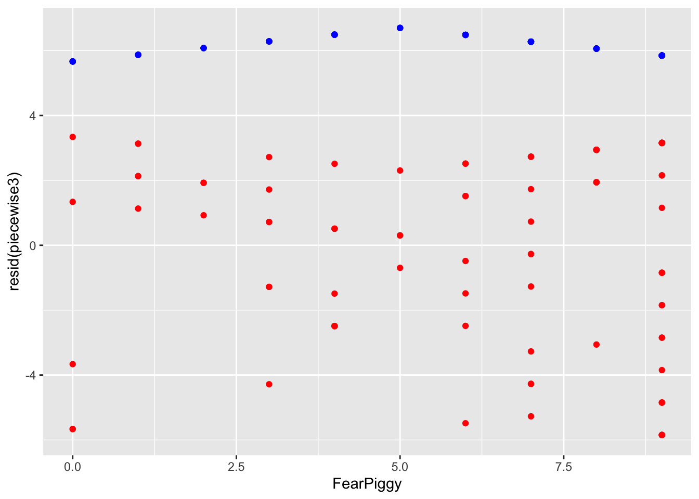
The piecewise segments in blue are incredibly flat - the model is a poor fit because the slopes were not significant. If you ever wanted to do more than one joint, you can add more knots, but instead of being dummy coded like XJ was, you need to use sequential coding (see the Multicategorical Predictors lesson).
Log transformations are probably the most universally applied method for dealing with nonlinearity. When you have a variable that is notably skewed, you can rescale it using logarithms, which reshapes the distribution by pulling in large values and spreading out smaller ones. This often makes relationships more linear, stabilizes variance, and improves model fit.
NOTE: Whenever you see “log” in statistics, it always refers to the natural log (otherwise denoted as “ln” in other domains). The log() function in R gives you the natural log by default. The exp() function gives you the inverse. For quick reference: exp(log(X)) = X and log(exp(X)) = X.
A caveat: the variable must be positive. If you have negative values or zeros, you need to shift your data first.
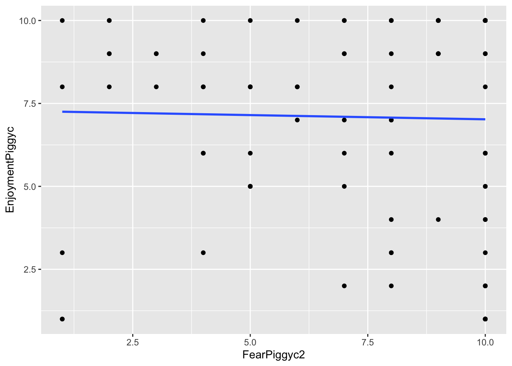
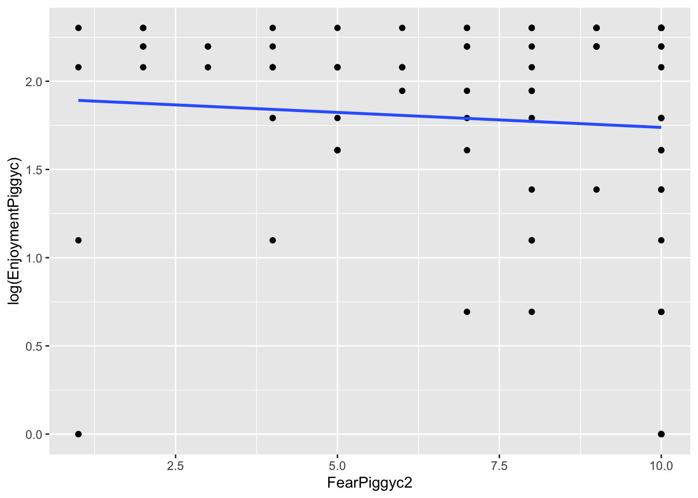
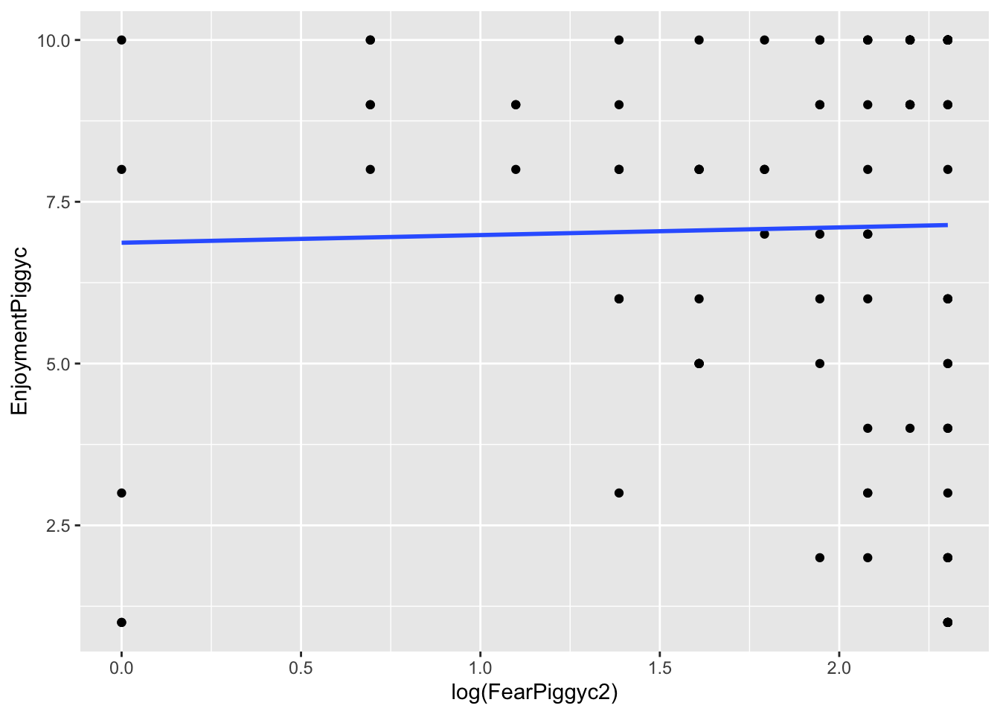
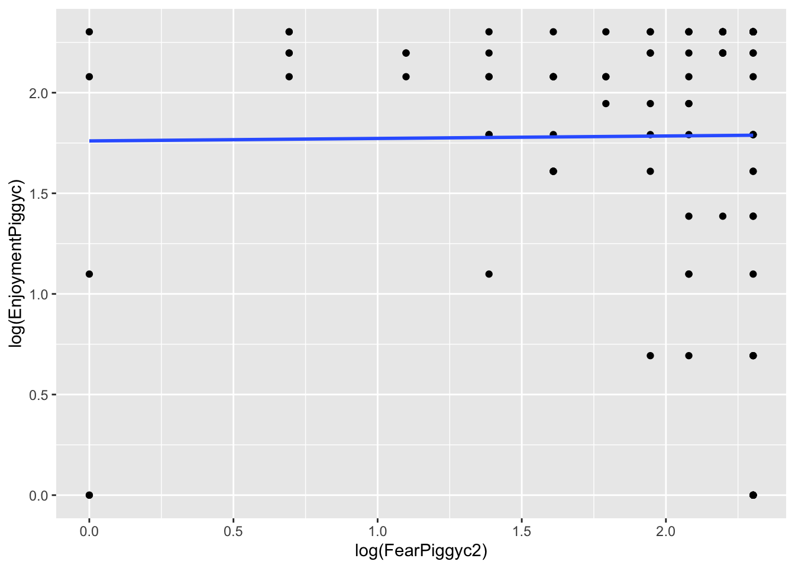
What you can note in the above plots is the scale of the axes. They become more condensed. Logs scale in magnitudes of distance from 0, so points further out become more compressed while points close to 0 do not get compressed as much.
You can add slight modifications to the logarithms to adjust the severity of the transformation, but you should not really play around with this unless you know what you are doing. It is bad practice to guess numbers and transform - you will get critique in reviewer feedback about this.
Log-transformed outcome:
When you log-transform Y, the coefficients are essentially percentage changes of the outcome.
Call:
lm(formula = log(EnjoymentPiggyc) ~ FearPiggyc2, data = feardata)
Residuals:
Min 1Q Median 3Q Max
-1.8917 -0.2142 0.2728 0.5258 0.5641
Coefficients:
Estimate Std. Error t value Pr(>|t|)
(Intercept) 1.90872 0.19348 9.865 <2e-16 ***
FearPiggyc2 -0.01702 0.02446 -0.696 0.488
---
Signif. codes: 0 '***' 0.001 '**' 0.01 '*' 0.05 '.' 0.1 ' ' 1
Residual standard error: 0.7087 on 100 degrees of freedom
Multiple R-squared: 0.00482, Adjusted R-squared: -0.005132
F-statistic: 0.4843 on 1 and 100 DF, p-value: 0.4881Interpretation of b1: Between two individuals who differ in FearPiggy by 1 point, the more afraid person is expected to be .01 lower in log-units of EnjoymentPiggy.
To get the exact percent change of the outcome: \[\%\Delta Y = (e^{b_1} - 1) \times 100\]
For two individuals who differ in FearPiggy by 1 point, the more afraid is expected to be 1.68% lower in EnjoymentPiggy.
Log-transformed predictor:
When you log-transform X, you cannot simply take the exponential of the slope to back-transform, because the slope now represents the change in Y for a one-unit change in \(\log(X)\), not X itself. The effect of X depends on its current value, so there is no single back-transformed slope on the original scale.
Call:
lm(formula = EnjoymentPiggyc ~ log(FearPiggyc2), data = feardata)
Residuals:
Min 1Q Median 3Q Max
-6.1400 -2.0878 0.9857 2.8600 3.1330
Coefficients:
Estimate Std. Error t value Pr(>|t|)
(Intercept) 6.8670 1.0017 6.855 5.96e-10 ***
log(FearPiggyc2) 0.1186 0.5107 0.232 0.817
---
Signif. codes: 0 '***' 0.001 '**' 0.01 '*' 0.05 '.' 0.1 ' ' 1
Residual standard error: 3.12 on 100 degrees of freedom
Multiple R-squared: 0.0005389, Adjusted R-squared: -0.009456
F-statistic: 0.05392 on 1 and 100 DF, p-value: 0.8168Interpretation of b1: Between two individuals who differ in \(\log(\text{FearPiggy})\) by 1 unit, the individual with the higher FearPiggy is expected to be .1186 units higher in EnjoymentPiggy.
A 1-unit difference in \(\log(X)\) corresponds to multiplying X by \(e \approx 2.72\). To express this as a percent change:
For two individuals where one has about 2.72 times higher FearPiggy than the other, the person with higher FearPiggy is expected to have about 12.6% higher EnjoymentPiggy.
Box-Cox transformations give you a data-driven way to find the optimal transformation of the outcome to better meet regression assumptions. Instead of choosing a preset transformation (like log) by guesswork, the Box-Cox method searches across a range of possible exponential transformations and identifies the one that is most optimal for improving model fit. You can do the Box-Cox transformation using boxcox() from the MASS package.
The transformation is controlled by a parameter \(\lambda\), where different values correspond to different transformations (\(\lambda = 1\) is no change, \(\lambda = 0\) approximates a log transformation, \(\lambda = 0.5\) is a square root).
The downside is that Box-Cox transformations destroy interpretability. Once you transform your variable, the coefficients cannot be understood conceptually. For this reason, the method is not very popular since most researchers care about interpretability.
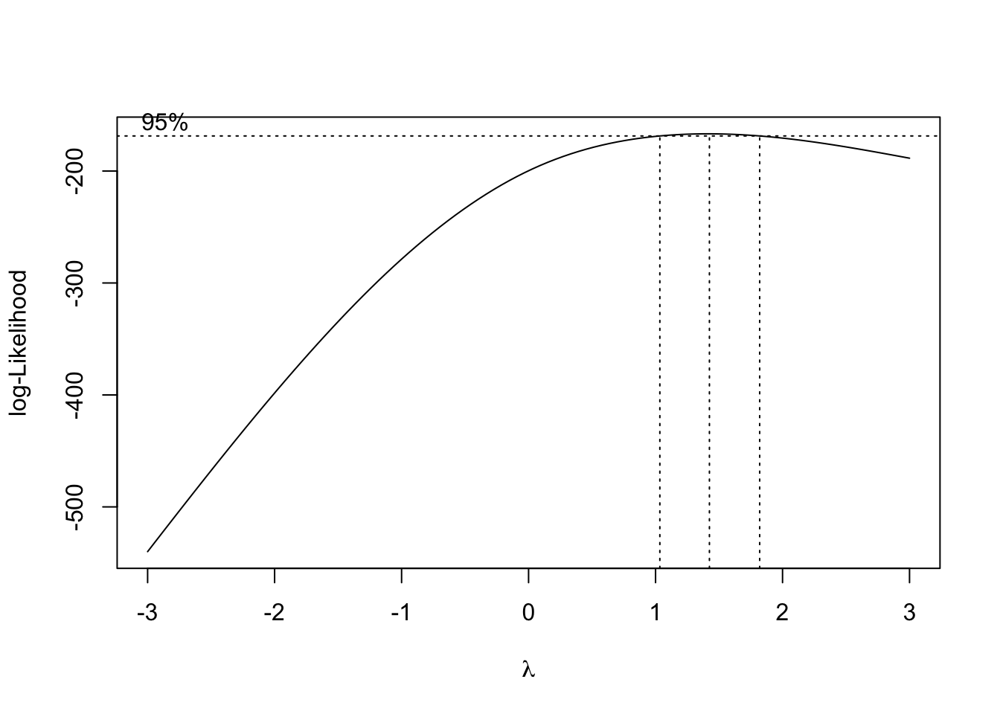
The plot shows the log-likelihoods of the model for every \(\lambda\) checked. The range within the vertical dotted lines gives the best fits, with the center dotted line being the most optimal.
Call:
lm(formula = EnjoymentPiggyBEST ~ FearPiggyc, data = feardata)
Residuals:
Min 1Q Median 3Q Max
-16.362 -7.435 2.005 9.249 9.266
Coefficients:
Estimate Std. Error t value Pr(>|t|)
(Intercept) 17.314239 0.918185 18.857 <2e-16 ***
FearPiggyc -0.007468 0.319986 -0.023 0.981
---
Signif. codes: 0 '***' 0.001 '**' 0.01 '*' 0.05 '.' 0.1 ' ' 1
Residual standard error: 9.273 on 100 degrees of freedom
Multiple R-squared: 5.447e-06, Adjusted R-squared: -0.009994
F-statistic: 0.0005447 on 1 and 100 DF, p-value: 0.9814So this is the most optimal transformation, which really did not do much since the model was not nonlinear and was a poor fit in general. And now the coefficient cannot be meaningfully interpreted.
You have completed the Nonlinear Regression tutorial. Here is a summary of what was covered:
I() function